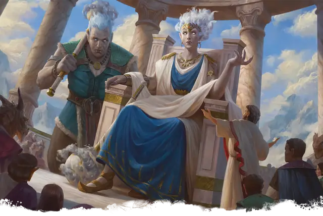

Облачный великан
Cloud Giant
Огромный Великан, Нейтральный

Класс Защиты 14 Инициатива +4 (14)
Хиты 200 (16к12 + 96)
Скорость 40 футов, Полёта 20 футов (парит)
| мод | спас | ||
|---|---|---|---|
| СИЛ | 27 | +8 | +8 |
| ЛОВ | 10 | +0 | +0 |
| ТЕЛ | 22 | +6 | +10 |
| мод | спас | ||
|---|---|---|---|
| ИНТ | 12 | +1 | +1 |
| МДР | 16 | +3 | +7 |
| ХАР | 16 | +3 | +3 |
Чувства пассивное Восприятие 21
Языки Общий, Великаний
Опасность 9 (5 000 опыта; БВ +4)
Действия
Мультиатака. Великан совершает две атаки Громовой булавой или Грозовым облаком в любой комбинации. Он может заменить одну из этих атак использованием Сотворения заклинаний, сотворяя Туманное облако.
Громовая булава. Бросок рукопашной атаки: +12, досягаемость 10 фт. Попадание: 21 (3к8 + 8) Дробящего урона плюс 7 (2к6) урона Звуком.
Грозовое облако. Бросок дальнобойной атаки: +12, дистанция 240 фт. Попадание: 18 (3к6 + 8) урона Звуком, и цель становится Недееспособной до конца её следующего хода.
Сотворение заклинаний. Великан сотворяет одно из следующих заклинаний, не нуждаясь в Материальных компонентах (заклинательная характеристика — Харизма, Сл спасброска заклинаний 15):
Неограниченно: Обнаружение магии, Свет, Туманное облако
1/день каждое: Власть над погодой, Газообразная форма, Телекинез
Бонусные действия
Туманный шаг. Великан сотворяет заклинание Туманный шаг (заклинательная характеристика — та же, что для Сотворения заклинаний).
Бонус мастерства +4
Среда обитания Горы
Сокровища Магические
Облачный великан
Великан недосягаемых высот
Облачные великаны используют могущество небес для наблюдения и незаметного влияния на мир. У этих исполинов, внешне напоминающих людей, цвет волос меняется от серебристого до голубого, кожа отливает оттенками облаков — от белоснежных до закатных тонов, а из верхней челюсти растут изогнутые клыки, выступающие за пределы нижней губы. В бою великаны атакуют оружием, окутанным штормовыми облаками, и бросают во врагов ревущий грозовой фронт.
Большинство облачных великанов обитает в цитаделях на вершинах величественных гор или волшебных дворцах, плывущих среди облаков. Многие из них уверены в своём благородном положении или предназначении. Некоторые считают себя равными богам, а значит им позволено манипулировать живущими на земле существами и брать всё, что они пожелают. Другие становятся равнодушными летописцами мира и утверждают, что обрели особый взгляд на происходящее благодаря долгой жизни и высокому положению. Облачные великаны часто владеют сказочными волшебными сокровищами, собранными со всего света или созданными ими самими (как правило, гигантских размеров).